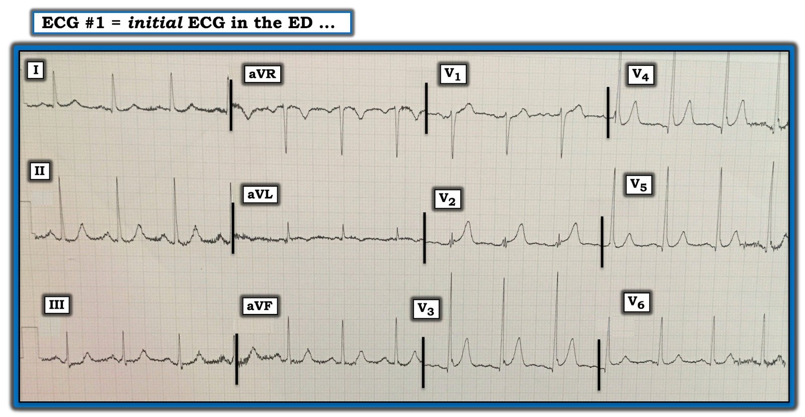
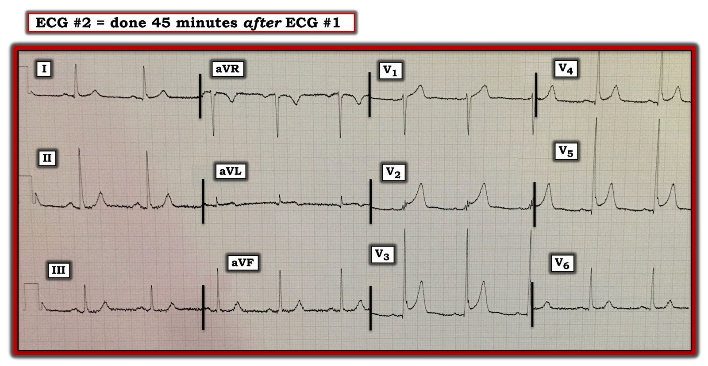
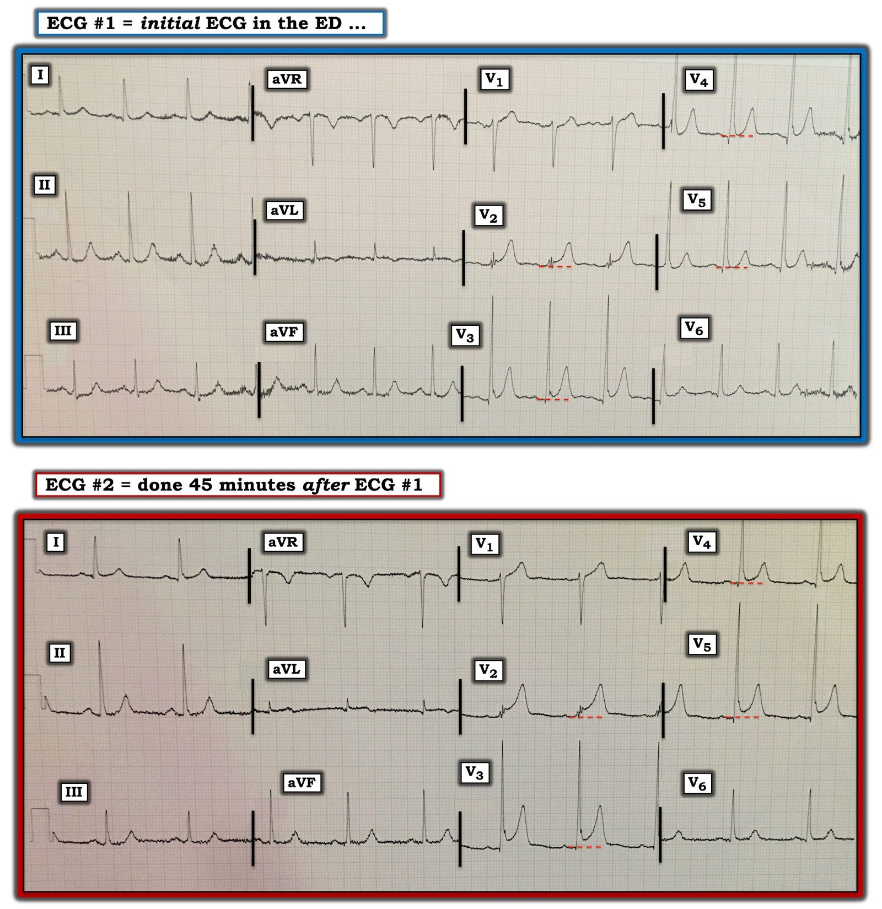

22/08/2020 — Thay đổi ST động ở một người đàn ông ngoài 50 tuổi bị đau ngực
Bản dịch tiếng Việt của bài "Dynamic ST Change in a mid-50s Man with Chest Pain" – Dr. Smith’s ECG Blog. Giữ nguyên toàn bộ 4 hình ảnh của bản gốc.
===================================
BÌNH LUẬN CỦA TÔI, bởi KEN GRAUER, MD (22/8/2020):
===================================
Bệnh nhân là một người đàn ông ngoài 50 tuổi đến khoa cấp cứu (ED) vì đau ngực mới khởi phát kéo dài khoảng 1 giờ. Triệu chứng làm ông thức giấc. Ông vẫn còn đau ngực tại khoa cấp cứu vào lúc ghi điện tâm đồ #1 (Hình 1).
CÂU HỎI:
- BẠN sẽ diễn giải NHƯ THẾ NÀO điện tâm đồ ban đầu của bệnh nhân trong Hình 1?


SUY NGHĨ CỦA TÔI về điện tâm đồ #1: Mặc dù có nhiễu đường nền đáng kể (nhất là ở các chuyển đạo chi) — bản ghi rõ ràng vẫn đọc được. Nhịp xoang khoảng 80-85 lần/phút — các khoảng PR, QRS và QTc bình thường — và trục mặt phẳng trán bình thường (khoảng +50 độ).
- Điện thế ở các chuyển đạo ngực rất lớn (tức là, sóng R ở chuyển đạo V5 =25mm thỏa tiêu chuẩn điện thế của LVH).
- Vùng chuyển tiếp nằm bình thường giữa V2-đến-V3 — dù sự chuyển từ phức bộ âm sang phức bộ dương diễn ra đột ngột, với biên độ sóng R tăng vọt (~30 mm) ngay ở chuyển đạo V3.
- Có các sóng Q nhỏ và hẹp bắt đầu từ chuyển đạo V3 — và kéo dài đến tận chuyển đạo V6 (cũng thấy các sóng q nhỏ ở chuyển đạo I và aVL).
- Dấu hiệu đáng lo ngại nhất trên điện tâm đồ #1 liên quan đến hình dạng sóng T — đặc biệt là sóng T ở chuyển đạo V2 rõ ràng trông cao không tương xứng so với phức bộ QRS biên độ nhỏ ở chuyển đạo này.
- Sóng T ở các chuyển đạo ngực khác ít đáng lo hơn nhiều. Chỉ có ST chênh lên rất nhẹ (không nhất thiết bất thường) ở V2, V3 và V4 — với đoạn ST có hình dạng lõm hướng lên (tức là, cấu hình “mặt cười”) kèm khía điểm J ở chuyển đạo V3 (và có thể cả ở chuyển đạo V4).
- Tôi cho rằng đánh giá ST-T ở chuyển đạo V1 không giúp ích gì. Trong khi phức bộ thứ 1 và thứ 3 ở chuyển đạo này dường như có ST chênh lên nhiều hơn thường lệ — thì phức bộ thứ 2 không có ST chênh lên, và nhiễu làm biến dạng, khiến hình dạng đoạn ST hơi khác nhau ở mỗi phức bộ trong 3 phức bộ của chuyển đạo này.
- Cuối cùng — có một số dấu hiệu tinh tế ở 3 chuyển đạo chi mà tôi không chắc chắn. Đó là: i) Gợi ý đoạn ST dẹt ở chuyển đạo III và aVF (so với hình dạng bình thường của đoạn ST dốc lên nhẹ mà ta thấy ở chuyển đạo I và II); và, ii) Gợi ý ST dạng vòm (coving) và chênh lên cực kỳ nhẹ (kèm sóng T đảo ngược nông) ở chuyển đạo aVL. Việc xác định LIỆU các dấu hiệu tinh tế này có thật và có ý nghĩa hay không càng khó hơn do nhiễu đường nền mà ta thấy.
ĐIỀU CỐT LÕI về điện tâm đồ #1: Trong bối cảnh đau ngực mới khởi phát, nghe giống đau do thiếu máu cục bộ ở người đàn ông 50 mấy tuổi này — tôi lo ngại rằng ở chuyển đạo V2, đoạn ST hơi chênh lên kèm sóng T cao không tương xứng có thể là một thay đổi tối cấp — và, trong bối cảnh đó — các dấu hiệu tinh tế tôi nêu ở trên tại III, aVF và aVL có thể là thật.
- Những dấu hiệu khác trên bản ghi này có thể phù hợp với một biến thể tái cực. Gồm: i) Khoảng QTc bình thường; ii) Biên độ QRS tăng rõ ở các chuyển đạo trước; iii) Mọi sóng Q trên bản ghi này (tức là, ở I, aVL; và V3-đến-V6) đều nhỏ và hẹp; và, iv) Ngoại trừ ở chuyển đạo V2 — mức ST chênh lên; khía điểm J; “hình dạng” đoạn ST và biên độ sóng T so với biên độ sóng R ở mỗi chuyển đạo ngực có vẻ tương xứng và phù hợp với một biến thể tái cực.
Ca bệnh tiếp diễn: Troponin ban đầu bình thường. Lúc này phòng thông tim (cath lab) không được kích hoạt. Bệnh nhân được điều trị bằng aspirin, nitroglycerin và morphin tĩnh mạch. Triệu chứng cải thiện — nhưng ông vẫn còn đau ngực 45 phút sau, khi ghi điện tâm đồ #2 (Hình 2).
CÂU HỎI:
- Sau khi xem điện tâm đồ #2 — BẠN nghĩ gì về ca này?


SUY NGHĨ CỦA TÔI về điện tâm đồ #2: Ấn tượng ban đầu của tôi sau khi xem điện tâm đồ #2 — là biên độ QRS nói chung và hình dạng ST-T tương tự như hình ảnh ST-T trên điện tâm đồ #1.
- CÂU HỎI: BẠN có nhận thấy khác biệt đáng kể nào giữa 2 bản ghi này không?
THÚ NHẬN CỦA TÔI: Trong lúc vội vàng đánh giá điện tâm đồ theo dõi ( = điện tâm đồ #2) — tôi đã không đặt 2 bản ghi cạnh nhau. Thay vào đó — tôi chỉ lật từ chỗ nhìn 12 chuyển đạo của điện tâm đồ #1 trong một cái liếc — rồi nhìn cả 12 chuyển đạo của điện tâm đồ #2 trong cái liếc tiếp theo …
- ĐIỂM THEN CHỐT (PEARL) #1: Cách tiết kiệm thời gian nhất để so sánh 2 bản ghi liên tiếp là sau khi đã diễn giải hoàn chỉnh bản ghi thứ 1 (như tôi làm ở trên) — Rồi đặt cả hai điện tâm đồ ngay cạnh nhau — Và sau đó tiến hành so sánh từng chuyển đạo một giữa 2 bản ghi. Hãy xem việc này DỄ HƠN biết bao khi nhìn vào Hình 3.


So sánh từng chuyển đạo trong Hình 3: Điện tâm đồ #2 ít nhiễu đường nền hơn điện tâm đồ #1. Đáng chú ý, trục mặt phẳng trán không đổi — và không có thay đổi đáng kể nào về biên độ hay hình dạng QRS ở bất kỳ chuyển đạo nào trong 12 chuyển đạo giữa 2 bản ghi. Do đó — bất kỳ thay đổi nào về hình dạng ST-T đều sẽ là “thật” — và không phải do thay đổi trục hay vị trí đặt điện cực.
- Cả hai bản ghi đều là nhịp xoang — nhưng tần số tim chậm hơn ở điện tâm đồ #2 (tức là, khoảng 65 lần/phút — so với ~85 lần/phút ở điện tâm đồ #1).
- Tôi không thấy thay đổi hình ảnh ST-T ở bất kỳ chuyển đạo chi nào.
- Nhưng có thay đổi chắc chắn về mức độ ST chênh lên giữa 2 bản ghi! Trong Hình 3 — các đường chấm ngang màu ĐỎ vẽ ở các chuyển đạo V2-đến-V5 cho thấy rõ ST chênh lên tăng đáng kể ở điện tâm đồ #2.
- Giờ đây đã có thể đánh giá hình ảnh ST-T ở chuyển đạo V1 của điện tâm đồ #2 — vì nhiễu ở chuyển đạo này nay rất ít. Khác với những gì ta thấy ở điện tâm đồ #1 — cả hai phức bộ QRS ở V1 của điện tâm đồ #2 nay trông giống nhau. Tôi cho rằng sóng T cao hơn và ST chênh lên tại điểm J ở V1 của điện tâm đồ #2 nhiều hơn mức thường thấy ở chuyển đạo này.
ĐIỀU CỐT LÕI về Hình 3: Tôi vẫn chưa tin chắc rằng hình ảnh tổng thể của điện tâm đồ #2 không phải là do một biến thể tái cực — đặc biệt khi sóng T có hình dạng nhọn tương tự nhau ở 10 trong 12 chuyển đạo và không có ST chênh xuống soi gương (dù ST chênh lên bắt đầu ngay từ chuyển đạo V1).
- ĐIỂM THEN CHỐT (PEARL) #2 — Như Dr. Smith đã nhấn mạnh trong bài đăng ngày 24 tháng Bảy năm 2013 trên Dr. Smith’s ECG Blog — hình ảnh ST-T trong các biến thể tái cực có thể thay đổi động! Đôi khi — hình ảnh ST-T của biến thể tái cực có thể thay đổi từ giờ này sang giờ khác — hoặc, hình ảnh ST-T có thể thay đổi do khác biệt về tần số tim, do gắng sức, hoặc do thay đổi trương lực phế vị — và đôi khi thậm chí không có lời giải thích rõ ràng nào.
- Dù có Điểm then chốt #2 này — sự thay đổi mà ta thấy trong Hình 3 về mức ST chênh lên tăng ở nhiều chuyển đạo của điện tâm đồ #2 vẫn đủ điều kiện là một thay đổi ST-T động ở bệnh nhân vẫn đang đau ngực này. Do đó — tôi cho rằng thông tim rõ ràng là có chỉ định để làm rõ bệnh cảnh lâm sàng.
Diễn tiến của ca này: Dựa trên điện tâm đồ #2 — bệnh nhân được thông tim. Chụp mạch vành cho thấy các mạch hoàn toàn bình thường (Không có bằng chứng bệnh mạch vành!). Các lần đo troponin liên tiếp đều bình thường. Chức năng thất trái bình thường trên thông tim và siêu âm tim. Bệnh nhân được xuất viện.
===============================
Dr. Smith – Bình luận: Tôi đã chia sẻ ca này với Dr. Smith. Suy nghĩ của ông: “Điện tâm đồ #1 hoàn toàn không giống OMI. Đây là một biến thể tái cực với sóng J ở V2 và V3 (đây không phải biến dạng phần cuối QRS). Nhưng ở điện tâm đồ #2 — mức ST chênh lên tăng từ 1mm lên 3mm ở V2 và V3. Tuy nhiên, tần số tim rất khác nhau giữa 2 bản ghi — và tôi nghĩ khác biệt này giải thích cho sự thay đổi ST chênh lên. Hơn nữa, giá trị công thức là 15,97 với điện tâm đồ #1 và 16,68 với điện tâm đồ #2 — cả hai giá trị đều rất thấp (bình thường).”
Bình luận thêm của Smith: có thể bạn sẽ rất ngần ngại kết luận thay đổi này là âm tính, và việc KHÔNG kích hoạt phòng thông tim rất có thể bị xem là mạo hiểm. Nhưng có một lựa chọn thay thế, nếu sẵn có, cho những tình huống khó này: siêu âm tim cấp cứu chất lượng cao có dùng chất cản âm, hoặc siêu âm tim đánh dấu mô đo sức căng (Strain Speckle Tracking Echocardiography) (nếu bạn có và biết cách sử dụng). Không có rối loạn vận động thành ở thành trước, vách liên thất và mỏm tim sẽ loại trừ OMI.
===============================
Những điểm cần học:
- Cách TỐT NHẤT để so sánh các điện tâm đồ liên tiếp — là diễn giải hoàn chỉnh một bản ghi trước — rồi đặt cả hai bản ghi cạnh nhau (như đã làm trong Hình 3) khi tiến hành so sánh từng chuyển đạo một. Cách này giúp nhận ra khác biệt giữa 2 điện tâm đồ DỄ HƠN.
- Đôi khi — các biến thể tái cực có thể cho thấy thay đổi ST-T động trên các bản ghi liên tiếp. Điều này đặc biệt đúng nếu tần số tim có thay đổi.
- Phát hiện thay đổi ST-T động trên các điện tâm đồ liên tiếp, kèm đau ngực vẫn đang diễn ra, là một chỉ định thông tim.
- ĐIỂM THEN CHỐT CUỐI CÙNG (PEARL): Xét rằng thông tim hoàn toàn bình thường và các lần đo troponin liên tiếp bình thường đã xác nhận các điện tâm đồ trong ca này là một biến thể tái cực — sẽ hữu ích khi nhận ra rằng sự chuyển tiếp đột ngột mà ta thấy ở chuyển đạo V2 trên cả hai bản ghi (từ QRS chủ yếu âm ở V1 — đến biên độ sóng R dương tăng vọt ở V3) nhiều khả năng là lý do khiến sóng T ở V2 của cả hai bản ghi ban đầu trông cao không tương xứng đến vậy! Giờ ta biết sóng T ở V2 này không phải tối cấp — mà chỉ phản ánh sự chuyển tiếp đột ngột, khiến sóng R cao hơi chậm xuất hiện cho tới chuyển đạo V3.
================
LƯU Ý: Xin chân thành CẢM ƠN Dr. Tharindu Uyanage (Úc) đã chia sẻ các bản ghi và ca bệnh này với chúng tôi!
================